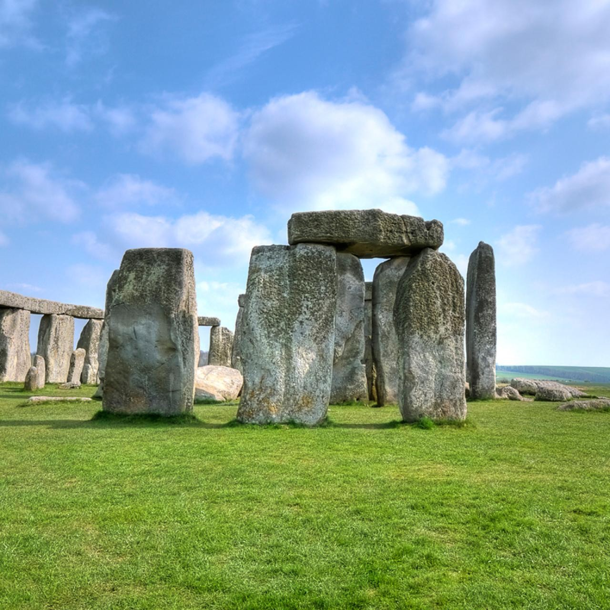
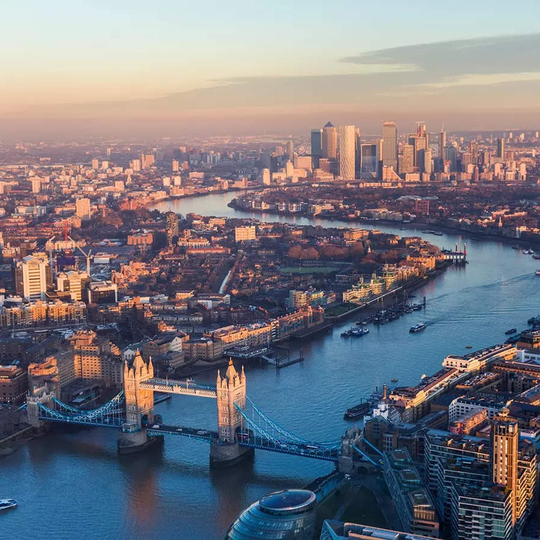

The United Kingdom
Exploring the Rich Heritage of the United Kingdom
Stepping foot in the United Kingdom felt like entering a living museum. This small yet diverse country is a treasure trove of history, art, and natural wonders. From the bustling streets of London to the misty Scottish Highlands, the UK had it all.
 My journey commenced in London, the heart of the British Empire. The city's iconic landmarks, from Big Ben and the Tower of London to Buckingham Palace, beckoned me to explore. I started my adventure by taking a stroll along the South Bank of the Thames, where the views of the city's skyline were nothing short of spectacular. One of my most memorable activities in London was attending a play at the Globe Theatre, a faithful reconstruction of Shakespeare's original theater. Watching the Bard's timeless words come to life in this historic setting was an experience I'll cherish forever. And of course, no visit to London would be complete without indulging in traditional fish and chips at a charming local pub.
From London, I ventured north to the enchanting city of Edinburgh. The Scottish capital welcomed me with its cobblestone streets, dramatic castle perched atop an extinct volcano, and a palpable sense of history. I explored the Royal Mile, a historic thoroughfare leading to the imposing Edinburgh Castle, where I marveled at the Crown Jewels and the Stone of Destiny. A highlight of my visit to Edinburgh was joining a guided tour of the underground vaults beneath the city. These hidden chambers, once inhabited by the city's poorest residents, are steeped in eerie tales and ghostly legends. It was a spine-tingling journey through the darker side of Scottish history.
My quest for natural beauty led me to the Lake District in northwestern England. This picturesque region, a haven for poets and writers, was where William Wordsworth composed his lyrical verses. I embarked on hikes through the lush countryside, where pristine lakes mirrored the surrounding fells. One sunny morning, I rented a rowboat on Lake Windermere. As I rowed across the tranquil waters, I couldn't help but feel a connection to the Romantic poets who had found inspiration in these very landscapes. It was a serene and contemplative experience that allowed me to appreciate the timeless allure of the Lake District.
 The Cotswolds, a region of rolling hills and honey-colored stone villages, offered a glimpse into quintessential English life. I explored charming towns like Bourton-on-the-Water and Stow-on-the-Wold, where thatched cottages and cozy tearooms exuded an old-world charm. One particularly delightful activity was partaking in a traditional afternoon tea in a 17th-century tearoom. Sipping on Earl Grey tea and savoring freshly baked scones with clotted cream and jam while surrounded by the Cotswolds' picturesque beauty was a true delight.
Leaving England behind, I ventured to Northern Ireland to witness the geological wonder that is Giant's Causeway. This UNESCO World Heritage site is famed for its hexagonal basalt columns, the result of ancient volcanic activity. Walking among the perfectly formed columns felt like stepping into an otherworldly realm. To get a unique perspective of this natural wonder, I took a guided kayaking tour along the Causeway Coast. Paddling through the crystal-clear waters, I marveled at the interplay between the basalt formations and the Atlantic Ocean, a testament to the forces of nature.
My exploration continued into the Welsh Valleys, a region steeped in myths and legends. I visited the town of Merthyr Tydfil, once a thriving ironworks hub during the Industrial Revolution. Exploring the Cyfarthfa Castle Museum and Art Gallery, I gained insight into the area's industrial heritage. In the Brecon Beacons National Park, I embarked on a hike to Pen y Fan, the highest peak in southern Britain. The panoramic views of lush valleys and rugged mountains were awe-inspiring. This journey through the Welsh Valleys allowed me to connect with Wales' cultural heritage and the breathtaking landscapes that have inspired generations.
My final stop took me to the remote and untamed Scottish Highlands. Here, I sought adventure amidst dramatic landscapes. I embarked on a multi-day hiking expedition through Glen Coe, an area of towering peaks and serene lochs. The rugged beauty of the Highlands was both challenging and rewarding, and I couldn't resist wild camping under the starry Scottish skies. One unforgettable experience was a wildlife safari in the Cairngorms National Park. I spotted red deer, golden eagles, and even glimpsed the elusive Scottish wildcat. Exploring the pristine wilderness of the Highlands left me with a profound appreciation for the natural wonders of Scotland.
My journey through the United Kingdom was a tapestry woven with history, culture, and natural beauty. From the bustling streets of London to the remote wilderness of the Scottish Highlands, every corner of this diverse nation held its own unique allure. I hope this virtual tour has sparked your curiosity about the United Kingdom. Whether you're drawn to the vibrant city life, the rich history, or the breathtaking landscapes, the UK offers a multitude of experiences waiting to be explored. Until our next adventure, may your travels be filled with wonder and discovery!